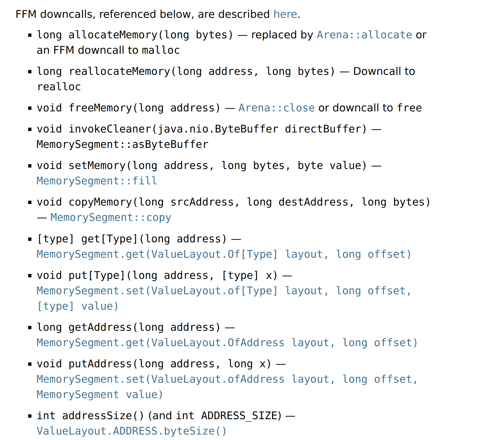
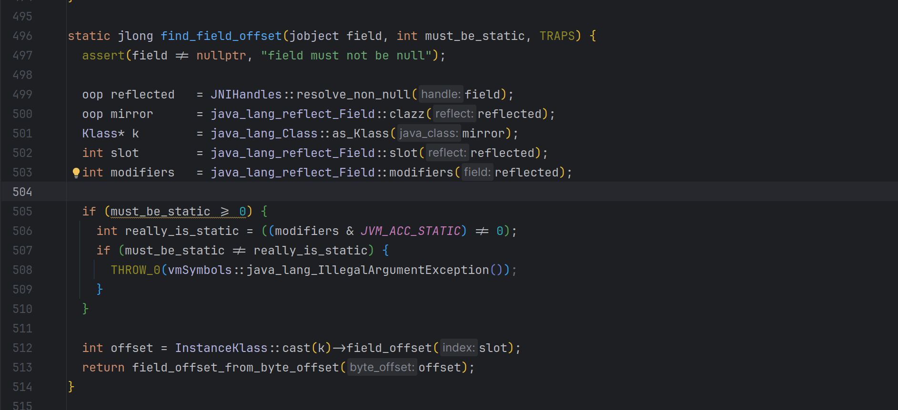
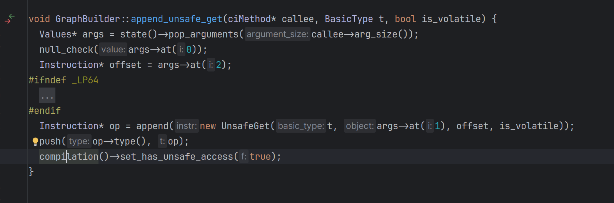
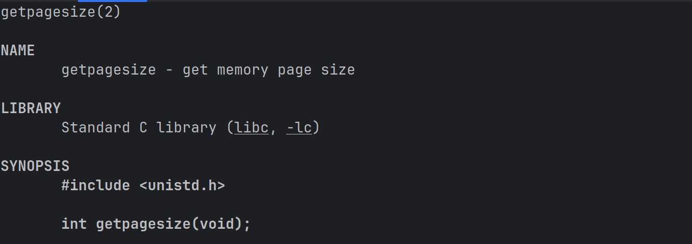

Unsafe中内存操作移除后的替代物
当前我们仍可以使用Unsafe做各种各样内存操作，但是在可预见的未来，这种内存操作会被openjdk组移除
这份JEP认为当前这些Unsafe的操作已经有Safe的API作为替代，同时在safe的前提下可以依赖于jit的魔力将其追平Unsafe的性能
但是笔者认为这份JEP是openjdk组那种狂热的追求"安全"，"可维护"的思想的又一次体现。总的来说这份JEP的含义是：
- 堆内的部分不要瞎搞，只允许在有权限的范围内执行内存操作。数组给你划界，对象给你卡权限，通过模块化，数组边界检查控制能get和能set的部分
- 堆外的部分可以搞，但是也得是在监管范围内的，生命周期约束，GC追踪，线程本地握手这些都是保证不会释放后使用的手段
- 另外则是继续坚持反对hack标准库
这里openjdk组玩了一个文字游戏，jdk存在两个Unsafe,一个是本次会被阉割的sun.misc.Unsafe,属于jdk.unsupported模块是给开发者用的，其全部操作都会转发到另外一个Unsafe上——jdk.internal.misc.Unsafe,其在java.base模块下，被严密保护起来了。 所以本次看起来是大削弱，但是其实一方面没有砍掉jdk内部Unsafe的能力，一方面又有替代品，实际上是小削弱。但是某些没有替代品的api的去除则实实在在给尝试手动接管jvm这台纯自动驾驶的开发者一记重拳。
手操内存
这里不展开直接贴JEP截图  除了invokeCleaner之外均可以直接替换，invokeCleaner目前没有等价替换物（在AutoScope下）
无条件"反射"和内存效应
很多"高性能"代码中可能会出现这样的代码
Field implLookupField = lookupClass.getDeclaredField("IMPL_LOOKUP");
long offset = UNSAFE.staticFieldOffset(implLookupField);
return (MethodHandles.Lookup) UNSAFE.getObject(UNSAFE.staticFieldBase(implLookupField), offset);
来获取某些对象中的某些字段，甚至是用来hack标准库获取特权操作，这里涉及到的staticFieldOffset和getObject的两个方法未来均会移除。从jdk源码中可以看到


这里获取offset和从offset获取某个值是完全的内存偏移量操作，并不包含任何权限判断，所以这正是openjdk组认为这东西不安全不稳定的原因。他们给出的替代品是Varhandle;
MethodHandles.Lookup lookup = MethodHandles.lookup();
VarHandle varHandle = lookup.findStaticVarHandle(Main.class, "a", MethodHandles.Lookup.class);
varHandle.set(lookup);
MethodHandles.Lookup staticValue = (MethodHandles.Lookup) varHandle.get();
通过这个神秘的LookUp来决定当前获取到的Varhandle是否具有操作对应字段的权限，这里往往会跟模块，可见性等相绑定，再加之JDK17带来的强模块化封死了通过Unsafe破坏模块化封装的"漏洞"。
对于内存效应的部分，比如说CAS,Memory Order,也是直接使用Varhandle进行解决，原来的Unsafe::compareAndSwapInt转为了VarHandle::compareAndSet。
对于手操内存屏障的部分则是全部从Unsafe直接迁移到Varhandle下
VarHandle.fullFence();
VarHandle.acquireFence();
VarHandle.releaseFence();
这里在替换时就会有一个隐藏的坑，原有的Unsafe操作原理是直接操作对应内存所以不是const也是有很好的效果的，但是Varhandle比较复杂涉及到多重编译，内联优化所以必须是const的，否则性能下降的很客观，你需要声明成如下代码才能获取更好的性能。
private final static VarHandle VH = ...
如果你的模式比较固定，只需要一种形式的操作又想延迟操作不妨试试invokeDynamic+ConstantCallSite,将对应的MethodHandle methodHandle = varHandle.toMethodHandle(VarHandle.AccessMode.GET); 转换为Methodhandle后塞入callsite.
类初始化
之前的类加载器机制其实并没有对外开放一些诸如字节码数组转Class,强制初始化等API,往往很依赖于Unsafe的某些api,比如Unsafe::defindClass, Unsafe::ensureClass.
目前这些都全量移动到了上面提到的Methodhandle$Lookup类下。
在实战中我们往往会手搓一些字节码然后加载，同时在<cinit>中写一些逻辑，这时候就需要ensureInitialized出马保证返回的Class一定是初始化完毕的
Class<?> aClass = null;
try {
aClass = lookup.findClass(className);
} catch (ClassNotFoundException ignore) {
}
//证明没有生成过
if (aClass == null) {
//其中使用lookup.defineClass加载生成出来的类
aClass = generateRuntimeProxyClass(lookup, nativeInterface);
}
//强制初始化执行cInit
lookup.ensureInitialized(aClass);
杂项
获取页面大小
Unsafe::pageSize 用于获取当前系统页面大小，这个api也会被移除。由于其是libc的一部分，所以可以很轻松地使用Panama FFI获取到

对应的调用代码也很简单
Linker nativeLinker = Linker.nativeLinker();
//方便展示直接get了
MemorySegment functionAddress = nativeLinker.defaultLookup().find("getpagesize").get();
MethodHandle getPageSizeHandle = nativeLinker.downcallHandle(
functionAddress,
FunctionDescriptor.of(ValueLayout.JAVA_INT),
Linker.Option.isTrivial()
);
int pageSize = (int) getPageSizeHandle.invokeExact();
当然使用Panama-generator更简单！
interface unistd {
@NativeFunction(value = "getpagesize", fast = true)
int getPageSize();
}
NativeCallGenerator generator = new NativeCallGenerator();
int size = generator.generate(unistd.class).getPageSize();
System.out.println(size);
私货
JNI方案
前面说了这么多其实都是为了私货部分，我之前写了个库——手操VirtualThread，就是把一些jdk内部的基建拿出来用，其中核心就是MethodHandle.Lookup中的那个静态字段IMPL_LOOKUP，其拥有无限的权限，不受任何限制调用任意的方法，哪怕是jdk内部的。但是由于Unsafe中offset相关方法的移除，我也不得不一边骂openjdk组一边寻找别的解决方案，让这个库继续跑下去。
封锁到最后发现只有jni这一条路了。
JNIEXPORT jobject JNICALL Java_top_dreamlike_VirtualThreadUnsafe_getTrustedLookUp
(JNIEnv *env, jclass jclazz) {
auto lookupClass = env->FindClass("java/lang/invoke/MethodHandles$Lookup");
auto fieldId = env->GetStaticFieldID(lookupClass, "IMPL_LOOKUP", "Ljava/lang/invoke/MethodHandles$Lookup;");
auto TRUST_LOOKUP = env->GetStaticObjectField(lookupClass, fieldId);
return TRUST_LOOKUP;
}
但是这里还有个高悬的已经提交的JEP草案,准备默认关闭jni的加载，或许某一天我的提供无需添加额外启动参数就可以使用VirtualThread带来的各种内部api的解决方案这句话也会被我自己删掉。
我很乐意见到jdk变得更安全，但是至少给我们这些有能力手操的人一点活路，如果官方举棋不定不知道该不该放出来API,也至少留个后门给社区发挥创造力。
Panama方案
在Linux上加载多次同一个动态库本质是都是同一份内存，也就是说我们可以通过Panama API加载libjava和libjvm两个动态库的方法，再解析对应的符号地址直接在当前的进程中调用到JVM中的某些方法，～那么我们就可以在java用Panama提供的FFI API实现上面的等价JNI功能。
想要做到这一点首先需要拿到JNIEnv *env这个小玩意，通过使用nm和readelf两个指令再搭配openjdk源码我们可以找到这样一个导出的符号来获取JNIENV 符号可以参考
➜ cpp-code readelf -a /home/dreamlike/jdks/jdk-21.0.1/lib/libjava.so |grep "JNU_GetEnv"
383: 000000000001a110 26 FUNC GLOBAL DEFAULT 12 JNU_GetEnv
633: 000000000001a110 26 FUNC GLOBAL DEFAULT 12 JNU_GetEnv
对应符号的源码可以参考
// 位于src/java.base/share/native/libjava/jni_util.c
JNIEXPORT void * JNICALL
JNU_GetEnv(JavaVM *vm, jint version)
{
void *env;
(*vm)->GetEnv(vm, &env, version); // 这个的实现见src/hotspot/share/prims/jni.cpp的jni_GetEnv
return env;
}
那么问题就转换为获取当前JVM对应的JavaVM*即可，熟悉jdk源码的读者应该知道源码中存在一个全局变量main_vm保存了当前的JavaVM实例，但是很可惜这个符号在符号表里面是隐藏的我们无法直接获取
➜ cpp-code readelf -a /home/dreamlike/jdks/jdk-21.0.1/lib/server/libjvm.so | grep "main_vm"
42899: 00000000013e1fa0 8 OBJECT LOCAL HIDDEN 27 main_vm
但是不要紧这个符号作为重要的一个符号肯定有导出的方法给其他的Java核心动态库使用，所以我们可以找到一个导出的符号正好可以帮忙拿到这个main_vm的指针
➜ cpp-code readelf -a /home/dreamlike/jdks/jdk-21.0.1/lib/server/libjvm.so | grep "JNI_GetCreatedJavaVMs"
63010: 0000000000977cc0 60 FUNC GLOBAL DEFAULT 11 JNI_GetCreatedJavaVMs
这个源码参考
// 位于src/hotspot/share/prims/jni.cpp
_JNI_IMPORT_OR_EXPORT_ jint JNICALL JNI_GetCreatedJavaVMs(JavaVM **vm_buf, jsize bufLen, jsize *numVMs) {
HOTSPOT_JNI_GETCREATEDJAVAVMS_ENTRY((void **) vm_buf, bufLen, (uintptr_t *) numVMs);
if (vm_created == COMPLETE) {
if (numVMs != nullptr) *numVMs = 1;
if (bufLen > 0) *vm_buf = (JavaVM *)(&main_vm);
} else {
if (numVMs != nullptr) *numVMs = 0;
}
HOTSPOT_JNI_GETCREATEDJAVAVMS_RETURN(JNI_OK);
return JNI_OK;
}
这样我们就拿到了VM指针进而拿到了JNIENV
代码可以参考
//省略动态库加载
MemorySegment jniGetCreatedJavaVM_FP = SymbolLookup.loaderLookup()
.find("JNI_GetCreatedJavaVMs")
.get();
MethodHandle JNI_GetCreatedJavaVM_MH = Linker.nativeLinker()
.downcallHandle(
FunctionDescriptor.of(ValueLayout.JAVA_INT, ValueLayout.ADDRESS, ValueLayout.JAVA_INT, ValueLayout.ADDRESS)
)
.bindTo(jniGetCreatedJavaVM_FP);
Arena global = Arena.global();
MemorySegment vm = global.allocate(ValueLayout.ADDRESS);
MemorySegment numVMs = global.allocate(ValueLayout.JAVA_INT, 0);
int i = (int) JNI_GetCreatedJavaVM_MH.invokeExact(vm, 1, numVMs);
mainVMPointer = vm.get(ValueLayout.ADDRESS, 0);
这样我们就拿到了全部想要的东西，在找这些东西的时候我们遇到了一个jni工具方法的c文件——jni_util.c，这里面有很多好玩的东西，比如说JNU_CallMethodByName可以允许我们调用任何方法。
那么回到需求本身，我想要拿到MethodHandle.Lookup中的那个静态字段IMPL_LOOKUP怎么办？首先直接通过JNU_GetStaticFieldByName获取对应字段可以吗？显然不行，这里拿到的是一个jobject返回只是一个long值没有办法转换为Object对象，所以这里我们这里就可以转换一下思路，我用jni打开模块限制然后直接反射不就好了？
我直接给出代码
long javaLangAccess = jniUtils.JNU_GetStaticFieldByName("jdk/internal/access/SharedSecrets", "javaLangAccess", "Ljdk/internal/access/JavaLangAccess;");
//获取静态字段的javaLangAccess的jobect
javaLangAccess = jniUtils.NewGlobalRef(javaLangAccess);
MethodHandle addExport = Linker.nativeLinker()
.downcallHandle(FunctionDescriptor.of(
ValueLayout.ADDRESS,
/*JNIEnv *env */ValueLayout.ADDRESS,
/*jboolean *hasException*/ValueLayout.ADDRESS,
/* jobject obj **/ ValueLayout.ADDRESS,
/*const char *name*/ ValueLayout.ADDRESS,
/* const char *signature*/ ValueLayout.ADDRESS,
/* jobject Module*/ ValueLayout.ADDRESS,
/* jstring pkg*/ ValueLayout.ADDRESS
)).bindTo(JniUtils.JNU_CallMethodByNameFP);
long utilsSystemClass = jniUtils.getSystemClass(MethodHandles.Lookup.class);
//这里就是获取MethodHandles.Lookup所在模块的jobject
long module = jniUtils.JNU_CallMethodByNameWithoutArg(utilsSystemClass, "getModule", "()Ljava/lang/Module;");
module = jniUtils.NewGlobalRef(module);
//将const char*转为jstring
long pkg = jniUtils.StringToJString(tmp.allocateUtf8String("java.lang.invoke"));
pkg = jniUtils.NewGlobalRef(pkg);
//调用JavaLangAccess::addOpensToAllUnnamed(Module m, String pkg)
MemorySegment address = (MemorySegment) addExport.invokeExact(
jniUtils.jniEnvPointer, MemorySegment.NULL, MemorySegment.ofAddress(javaLangAccess), tmp.allocateUtf8String("addOpensToAllUnnamed"),
tmp.allocateUtf8String("(Ljava/lang/Module;Ljava/lang/String;)V"), MemorySegment.ofAddress(module), MemorySegment.ofAddress(pkg));
Field field = MethodHandles.Lookup.class.getDeclaredField("IMPL_LOOKUP");
field.setAccessible(true);
Object o = field.get(null);
System.out.println(o);